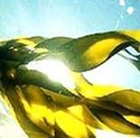
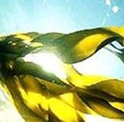

Классический (обрезной) маникюр – позволяет быстро и без особых проблем придать сияющий, ухоженный и здоровый вид ногтям. Обрезной маникюр универсален , является лучшим вариантом для запущенных ногтей, практически не имеет никаких противопоказаний.
Стоимость: от 400 руб.
Горячий маникюр – отличное средство укрепить слабые ногти и поддержать молодость кожи рук, за счет воздействия кремов, масел или специальных лосьонов, имеющих определенную температуру. Горячий маникюр рекомендуется для использования, как взрослым, так и детям. После процедуры горячего маникюра ногти перестанут расслаиваться и ломаться, кожа рук станет мягкой и будет выглядеть моложе, исчезнут морщинки, замедлится рост кутикулы.


Японский маникюр — это эффективная система по уходу за натуральными ногтями, способствующая укреплению, питанию и росту ослабленной, склонной к трещинам и отслоениям ногтевой пластины. Японский маникюр - это восстановительный комплекс процедур, с использованием природных компонентов и материалов, который в любое время года идеально подойдет и женщине, и мужчине. Рекомендуется применять при расслаивании и ломкости ногтей, после снятия искусственных ногтей, когда натуральная ногтевая пластина особенно нуждается в интенсивном восстановлении. Эффект от воздействия процедуры впечатляет: ногти начинают быстрее расти, становятся крепче, кожа — более эластичной и устойчивой к воздействию неблагоприятных факторов внешней среды.
Стоимость: 700 – 800 руб.


Бразильский маникюр считается самым удобным, легким, быстрым маникюром. Бразильская процедура – это применение одноразового набора, состоящего из пропитанных кремом перчаток, пилочки и апельсиновой палочки. Здесь не нужно распаривать и размачивать руки ванночкой с водой и маслами, солями. Маникюрный набор обеспечивает профессиональный уход за руками, позволяя поддерживать красоту и здоровье ногтей с минимальными затратами времени.
Все компоненты набора полностью стерильны и обеспечивают надёжную защиту от инфицирования. Крем в перчатках представляет собой комплексный препарат для ухода за кожей рук и ногтями. В его составе:
- Увлажнитель (Мочевина) обладает абсорбирующими свойствами, поддерживает водный баланс кожи на уровне естественного. Принцип действия увлажнителя заключается в притягивании влаги извне и уменьшении скорости её испарения.
- Витамин Е замедляет старение кожи. Оказывает антиоксидантный и противовоспалительный эффект.
- Кератин важный компонент кожи и ногтей, укрепляет их и способствует регенерации.
- Akorex L ® вытяжка из семян Brassica napus. Оказывает антиоксидантный и восстанавливающий эффект, увлажняет кожу и защищает от UF-лучей.
- Масло копайского дерева обладает тонизирующими, антисептическими и противовоспалительными свойствами. Стимулирует тургор кожи, благотворно влияет на стенки сосудов
- Cредство не вызывает аллергии, не содержит консервантов и силикон. После его использования кончики ногтей становятся белыми, а кожа рук – мягкой и нежной
Средство не вызывает аллергии, не содержит консервантов и силикона. После его использования кончики ногтей становятся белыми, а кожа рук – мягкой и нежной.
Стоимость: 500 руб.


IBX System – это инновационная система укрепления, восстановления ногтей. Урепляющее средство IBX проникает внутрь ногтя и действует изнутри. Система IBX делает ногти более сильными, крепкими и гибкими, помогает избавиться от всевозможных дефектов, устраняет расслоение, трещины ногтевой пластины.
IBX System можно использовать в двух случаях: как средство для укрепления ногтевой пластины, либо как защитное средство для ногтей под гель-лак. Препарат не снимается жидкостью для снятия акрила и гель-лака, он отрастает только вместе с натуральным ногтем.


 
